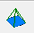
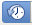
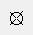
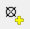
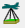
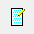

Раздел 5 Стереоизмерения
5.1 Установка программного обеспечения
Для практической работы вам понадобится открытая учебная фотограмметрическая программа E-foto. Информацию о ней можно найти на домашнем сайте, там же можно скачать себе дистрибутив программы. Для этого перейдите во вкладку DOWNLOAD – Latest Version.
Страница для загрузки программы и данных
Запустите скачанный пакет установщика и установите программу.
5.2 Исходные данные
В качестве исходных данных мы будем использовать серию аэрофотоснимков с перекрытием на территорию окрестностей УНС Сатино, сделанную в 1970 году, а также сеть опорных точек и топографическую карту.
5.3 Создание проекта
Запустите программу E-foto. В меню выберите Project – New. Укажите путь для сохранения файла проекта с расширением .epp.
Откроется окно менеджера проекта. Слева приведена структура проекта, а по центру - содержание. В разделе Project Header вам нужно указать общую информацию о проекте. Для этого включите режим редактирования, нажав на кнопку Edit внизу страницы.

Окно менеджера проекта
Перейдите в раздел Terrain и укажите общую информацию о территории.
Максимальная высота – 200 м.
Минимальная высота – 133 м.
Средняя высота – 167 м.
Зона UTM – 37.
Примерную широту и долготу центра территории укажите, используя программу Google Earth и точки фототриангуляции. Не забудьте указать правильные полушария.
Перейдите в раздел Sensor и укажите общую информацию о съёмке.
Сенсор – АФА-41/10.
Тип – кадровый аналоговый снимок.
Калиброванное фокусное расстояние аэрофотоаппарата – 96.78 мм.
Координаты главной точки – x = 0.5, y = 0.4.
Компенсированная радиальная дисторсия учтена при калибровке фокусного расстояния (исходно 100 мм). Некомпенсированная радиальная дисторсия +-25 мкм, что очень мало, поэтому мы ей можем пренебречь.
Укажите координаты координатных меток снимков (Fiducial marks) в последней таблице.
Координаты меток
В разделе Flight мы можем указать примерную высоту съёмку – 1500 м, а также примерный масштаб снимков 1:14 000.
В разделе images нужно загрузить аэрофотоснимки, указав их разрешение – 600 dpi. Вы можете после этого открыть раздел с каждым из загруженных снимков и увидеть информацию о нём.
Параметры снимка внутри проекта
В этом разделе нажмите на кнопку View Image для просмотра изображения. Если при открытии изображения возникла ошибка, то, скорее всего, у вас неправильно записались пути в файле проекта. Обратите внимание на снимок экрана выше – в строке пути должен быть указан путь, в строке имени файла - только его имя, а в строке ID снимка достаточно указать имя файла без расширения. Исправить это внутри программы нельзя, но, к счастью, файл проекта – это документ XML, который редактируется блокнотом. Найдите внутри него соответствующие теги и исправьте содержимое внутри них.
Параметры снимка в формате XML
5.4 Внутреннее ориентирование
Для выполнения внутреннего ориентирования снимков выберите пункт меню Execute – Interior Orientation. В открывшемся окне предлагается выбрать снимок для ориентирования. Необходимо последовательно выполнить эту операцию для всех снимков. Для масштабирования можно использовать инструмент лупы, который работает на выделяемую прямоугольную область. Для произвольного изменения масштаба в обе стороны нужно зажать колёсико мыши. Координатные метки рассматриваемых снимков расположены возле края середины каждой из сторон и представляют собой асимметричные кресты, которые по размеру больше, чем обычные регулярные кресты, идущие с шагом в 1 см.
Координатная метка снимка
Обратите внимание на порядок координатных меток – правая, левая, верхняя, нижняя. Вам нужно расставлять их в таком же порядке. Внизу окна приводится табличка, где выделена строка с активной на данной момент меткой. Как только вы метку установили, автоматически активной становится следующая метка в таблице. Если вам необходимо исправить положение координатной метки, то нужно выделить соответствующую строку в таблице и указать на снимке правильное положение метки.
После расстановки меток нажмите на кнопку . В результате откроется окно отчёта внутреннего ориентирования с вектором параметров аффинного преобразования системы координат камеры и матрицей вариации-ковариации. Если точность операции удовлетворительная, то будет активна кнопка Accept, нажав которую, мы сохраняем параметры. После этого нажмите на кнопку Done , что вернёт вас в основное окно проекта.
Отчёт внутреннего ориентирования
Аналогично операция проделывается для всех снимков.
5.5 Опорные точки
Поскольку параметры внешнего ориентирования нам заранее неизвестны, то их необходимо рассчитать на основе обратной фотограмметрической засечки. Для этого нам потребуются опорные точки с известными координатами и высотами. Откройте в программе Google Earth Pro файл KML с точками фототриангуляции. Для просмотра нам потребуется снимок QuickBird за 20 апреля 2006 года (как самый хронологически близкий к 1970), который можно включить кнопкой .
Опорные точки на снимке QuickBird за 20 апреля 2006 года
Следует иметь в виду, что координаты этих точек достаточно точно уравнены между собой, но снимок сам по себе может быть аффинно сдвинут на некую постоянную величину. Нам необходимо получить координаты этих точек в проекции UTM. Для переключения показа координат в UTM зайдите в меню Инструменты – Настройки и выберите соответствующий пункт в разделе Показывать шир/долг.
Настройки показа координат
Теперь, если вы правой кнопкой мыши щёлкните по опорной точке и из меню выберите Свойства, перед вами откроется окно с координатами восточного и северного склонения для точки.
Для добавления опорных точек в программе E-foto в меню проекта перейдите в раздел Points и нажмите на кнопку New. В открывшемся окне задайте имя опорной точки, впишите её координаты из Google Earth. Высоту точки возьмите с топографической карты, зная, что сечение основных горизонталей 2 метра. Для плановых координат указывается стандартное отклонение 3 метра (это худшее возможное значение согласно некоторым исследованиям [1, 2]). Для высот укажите СКО в 2 метра.
| Опорная точка | Описание точки на АФС |
|---|---|
| p1 | Северо-восточный угол сельского клуба в Сатино |
| p2 | Северо-западный угол сатинскогохрамамагазина |
| p3 | Северо-западный угол пруда в Ивановском |
| p4 | Угол леса в районе Бутовского холма |
| p10 | Северо-восточный угол забора садов в Рыжково |
| p11 | Юго-восточный угол пристройки коровника в Загрязье |
| p12 | Юго-западный угол коровника в Ивановском |
| p13 | Внутренний угол забора садового участка в Сатино |
| p14 | Юго-восточный угол залежной полосы на склоне южнее урочища Вторые Столбцы |
| p15 | Северный угол островка леса на Дедюевском холма, соответствующий краю развилки дорог |
| p16 | Одиноко стоящее дерево в верховьях Антоновской балки |
| p17 | Юго-восточный угол пруда в Медвежьем болоте |
| p18 | Западный угол пожарного пруда в Рыжковской излучине |
| p19 | Поворот дороги вдоль юго-восточного угла леса |
| p20 | Северо-западный угол храма в Беницах |
| p21 | Угол забора в Рыжково |
| p22 | Верхушка оврага Узкого |
| p23 | Барсучий овраг |
Внесите информацию об опорных точках и сохраните проект.
5.6 Обратная фотограмметрическая засечка
Для внешнего ориентирования с помощью обратной фотограмметрической засечки в меню выберите пункт Execute – Spatial Resection. Аналогично внутреннему ориентированию откроется окно с выбором снимка. Далее откроется снимок с таблицей опорных точек внизу. Аналогично расстановке координатных меток установите опорные точки на снимке с помощью кнопки Measure . Пропускайте те точки, которые отсутствуют на данном снимке. Для исключения опорной точки из засечки нажмите на крестик . После расстановки всех опорных точек на снимке нажмите на  , согласитесь со всеми параметрами точности, после чего перед вами откроется отчёт об уравнивании с параметрами внешнего ориентирования и матрицей вариации-ковариации.
, согласитесь со всеми параметрами точности, после чего перед вами откроется отчёт об уравнивании с параметрами внешнего ориентирования и матрицей вариации-ковариации.
Окно отчёта уравнивания параметров внешнего ориентирования
Обратите внимание, что значение координаты Z должно быть около 1600 м, значения углов должны быть маленькими. Если параметры точности в матрице достаточны, то вы сможете нажать на кнопку Accept – параметры внешнего ориентирования будут сохранены. После этого нажмите на кнопку Done , что вернёт вас в основное окно проекта. Проделайте аналогичные операции для остальных снимков.
5.7 Взаимное ориентирование снимков
Ранее вы получили элементы внешнего ориентирования для каждого снимка по отдельности. Для более точного ориентирования модели местности необходимо взаимно ориентировать снимки и сделать уравнивание связок. В меню выберите пункт Execute – Phototriangulation.
Окно стереокомпаратора
Перед вами откроются окна с левым и правым снимком, окно со списком наземных опорных точек, а также окна с их измерениями на соответственных снимках. Для фототриангуляции необходимо дополнительно поставить так называемые фотограмметрические точки (связующие точки).
Обратите внимание, что для корректных измерений и дальнейшего ориентирования модели необходимо правильно указать левый и правый снимок – они должны быть в соответствующих окнах.
Для создания связующей точки нажмите на кнопку Create a photogrammetric point in project . Затем разместите точку с помощью кнопки Measure на левом и правом снимке. При выборе места размещения помните о наилучших местах на стереопаре при взаимном ориентировании снимков.
После расстановки всех связующих точек нажмите на кнопку Execute phototriangulation . Откроется окно, где будут предложены снимки и точки для уравнивания связок проектирующих лучей.
Окно выбора снимков и точек для фототриангуляции
Если на предыдущих этапах всё было сделано правильно, то вы получите отчёт с корректными значениями элементов внешнего ориентирования, которые можно принять и использовать в дальнейшем. Помимо элементов внешнего ориентирования в отчёте приводятся поправки к ним относительно ранее выполненной обратной фотограмметрической засечки, а также расчётные координаты для связующих точек.
Окно отчёта фототриангуляции
Обратите внимание, что из-за особенностей программы координата северного склонения в отчёте получает дополнительный разряд в начале. К сожалению, в текущей версии эта проблема не решается и для дальнейшей работы необходимо иметь в виду, что у вас есть дополнительный сдвиг по оси Y на 10000000 м.
Если полученные результаты вас устраивают, нажмите на кнопку Save measurements.
5.8 Работа в стереокомпараторе
В меню проекта выберите пункт Execute – Stereo Plotter. Откроется окно с анаглифными изображением стереопары снимков. Для эффективной работы с анаглифами рекомендуется использовать специальные очки.
Окно стереокомпаратора
Если изображение в анаглифических очках двоится, зажмите SHIFT и подвиньте изображение до тех пор, пока рассматриваемый участок не сольётся в объёмное изображение. Для измерения высоты в точке нужно добавить точку с помощью кнопки , далее выбрать кнопку . При устранённых параллаксах (восстановленной стереомодели на данную территорию) с помощью колеса мыши нужно посадить марку на измеряемый объект. На увеличенных фрагментах левого и правого изображения снизу будут показываться эти марки в «монокулярном» режиме. Как только мнимая марка слилась (реальные марки оказались на соответственных точках), нажмите левую кнопку мыши и в окне справа появятся измерения для данной точки. В случае, если вы замечаете поперечный параллакс, необходимо зажать CTRL и крутить колесо мыши до тех пор, пока поперечный параллакс не станет равен нулю.
Результаты измерений можно экспортировать в виде текстового файла, нажав на кнопку .
| Карпачевский А.М. Основы дистанционного зондирования и фотограмметрии. М.: Географический факультет МГУ, 2023. |